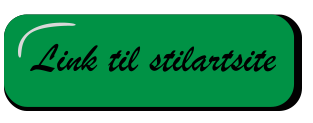

Tema 1 Grundlæggende Webdesign
I det første tema, blev vi opdelt i nogle grupper og fik givet en stilart. Jeg fik dekonstruktivisme, derefter fandt jeg alt det information om stilarten, som vi så fik redigeret ind i en indesign templet, så den matchede vores stilart.
Her er mit moodboard jeg lavede til dekonstruktivisme
Derefter skulle vi starte på, at lave et HTML site.
Her lærte jeg at bruge de forskellige html tags vi havde lært til at strukturer hjemmesiden. Classes og ids brugte vi til at opdele de forskellige sektioner fra hinanden. I CSS brugte vi flexbox til fortælle vores hjemmeside hvor og hvordan de forskellige sektions og elementer skal placeres og se ud. Vi gav dem en display-flex og brugte flex wrap, så de wrappede under hinanden i forskellige skærm størrelser. Flexgrow og basic til at justier de forskellige størrelser. Vi brugte også en masse egenskaber indenfor flexbox. Til udføre de forskellige layout strukturere, så de matchede vores indesign template.
